Figura 1. Hub Principal — Organigrama interactivo con resumen ejecutivo, nombre de empresa y acceso a los tres modulos.
| Obra: | Programa de Computadora (Software) |
| Version: | 0.1.0 |
| Autora: | Soraya Dayan Gutierrez Perez |
| Titular: | Soraya Dayan Gutierrez Perez (Persona Natural) |
| Fecha: | Marzo 2026 |
Documento presentado ante la Direccion Nacional de Derecho de Autor (DNDA) del Ministerio de Comercio e Industrias de la Republica de Panama, para efectos del registro de derechos de autor sobre obra literaria tipo programa de computadora.
Mi Director Financiero PTY es una plataforma web de alta direccion financiera y legal disenada exclusivamente para emprendedores panamenos. La aplicacion integra en un solo lugar todas las herramientas que un emprendedor necesita para tomar decisiones informadas sobre su negocio: desde la contabilidad formal hasta la proyeccion estrategica, pasando por el cumplimiento fiscal con la DGI y la gestion de recursos humanos bajo la legislacion laboral panamena.
La plataforma opera con el concepto de "Tu Aliado Estrategico": no solo registra numeros, sino que los interpreta, genera alertas proactivas y ofrece recomendaciones accionables a traves de un asistente de inteligencia artificial.
Principales capacidades:
| Requisito | Especificacion |
|---|---|
| Navegador web | Google Chrome 90+, Firefox 90+, Safari 15+, Edge 90+ |
| Conexion a internet | Requerida para acceso inicial; datos se almacenan localmente |
| Dispositivo | Computadora, tablet o telefono celular (diseno responsivo) |
| Resolucion minima | 375px de ancho (compatible con iPhone SE) |
| Sistema operativo | Cualquiera (Windows, macOS, Linux, iOS, Android) |
Figura 1. Hub Principal — Organigrama interactivo con resumen ejecutivo, nombre de empresa y acceso a los tres modulos.
Al ingresar a la aplicacion, se presenta un organigrama interactivo que muestra la estructura completa de Mi Director Financiero PTY. Este organigrama funciona como un mapa visual de todas las funcionalidades disponibles.
Elementos del organigrama:
Desde el Hub puede configurar la informacion basica de su empresa:
| Campo | Descripcion |
|---|---|
| Nombre de la empresa | Nombre comercial o razon social. Haga clic en el campo para editarlo directamente. |
| Logo | Suba una imagen (PNG, JPG) de su logo. Haga clic en el icono de camara para seleccionar un archivo. |
| Rubro / Industria | Seleccione su tipo de negocio del menu desplegable (13 opciones: Restaurante, Comercio, Tecnologia, Servicios Profesionales, etc.). |
La aplicacion se organiza en tres grandes modulos, cada uno representado por una tarjeta de color distintivo:
| Modulo | Color | Descripcion |
|---|---|---|
| Mi Contabilidad | Esmeralda (verde) | Contabilidad formal, impuestos, RRHH e inventario. |
| Mis Finanzas | Dorado (#C5A059) | Analisis financiero, simuladores, precios y valoracion. |
| Mi Empresa - Doc Legales | Violeta | Documentos legales, compliance, constitucion y KYC. |
En computadora: Haga clic en cualquier tarjeta del organigrama para navegar al modulo correspondiente. Use el boton "Volver al Hub" (flecha izquierda) en la esquina superior para regresar.
En celular: Use la barra de navegacion inferior con tres botones (Mi Contabilidad, Mis Finanzas, Doc Legales) para cambiar entre modulos.
Este modulo contiene cinco sub-pestanas accesibles desde la barra horizontal superior:
| Pestana | Icono | Color | Funcion |
|---|---|---|---|
| Diagnostico Flash | Rayo | Violeta | Entrada rapida de datos financieros |
| Contabilidad | Libro | Azul | Libros contables formales |
| Espejo DGI | Escudo | Indigo | Formularios fiscales pre-llenados |
| Mi RRHH | Personas | Teal | Gestion de personal y planillas |
| Mi Inventario | Cajas | Ambar | Control de productos y stock |
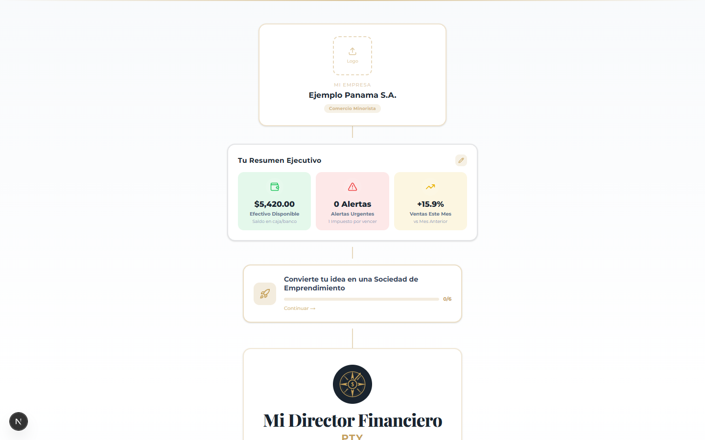
Figura 2. Diagnostico Flash — Formulario de entrada rapida de datos financieros con campos por categoria.
El Diagnostico Flash permite ingresar datos financieros de manera rapida utilizando multiples metodos de entrada:
| Campo | Descripcion |
|---|---|
| Ventas (Revenue) | Total de ingresos por ventas y servicios del mes. |
| Costo de Ventas (COGS) | Costo directo de producir o comprar lo vendido. |
| Alquiler | Renta mensual del local comercial. |
| Nomina | Total de salarios pagados en el mes. |
| Otros Gastos | Marketing, servicios publicos, seguros, etc. |
| Depreciacion | Desgaste mensual de equipos y maquinaria. |
| Intereses | Pago de intereses de prestamos bancarios. |
| Impuestos | ITBMS y otros impuestos estimados del mes. |
| Efectivo en banco | Saldo actual en cuentas bancarias. |
| Cuentas por cobrar | Dinero que le deben los clientes. |
| Inventario | Valor de la mercancia almacenada. |
| Cuentas por pagar | Dinero que usted debe a proveedores. |
| Deuda bancaria | Saldo total de prestamos financieros. |
La pestana de Contabilidad Formal ofrece seis sub-modulos que cumplen con los requisitos legales de contabilidad en Panama:

Figura 3. Plan de Cuentas — Catalogo jerarquico contable con 62+ cuentas predeterminadas, adaptado a Panama.
Catalogo de cuentas contables basado en el estandar panameno con codigos decimales (1.0 Activos, 2.0 Pasivos, 3.0 Patrimonio, 4.0 Ingresos, 5.0 Gastos). Permite visualizar la estructura completa y agregar cuentas personalizadas.
Registro cronologico de todas las operaciones comerciales. Cada asiento contable contiene fecha, descripcion, y movimientos DEBE y HABER que siempre deben ser iguales (principio de Partida Doble). Los asientos pueden crearse manualmente o generarse automaticamente desde el Diagnostico Flash.
Vision por cuenta individual. Muestra todos los movimientos de una cuenta especifica con su saldo acumulado. Util para verificar el estado de cuentas como Banco, Ventas o Proveedores.
Reporte de verificacion que confirma que la suma de todos los debitos es igual a la suma de todos los creditos. Si no cuadra, indica un error en los registros contables.
Libro contable de inventarios que registra los valores de bienes del negocio segun la normativa fiscal panamena.
Proceso mensual donde se congelan los numeros del periodo para que los libros contables sean legales y esten listos para revision de la DGI.
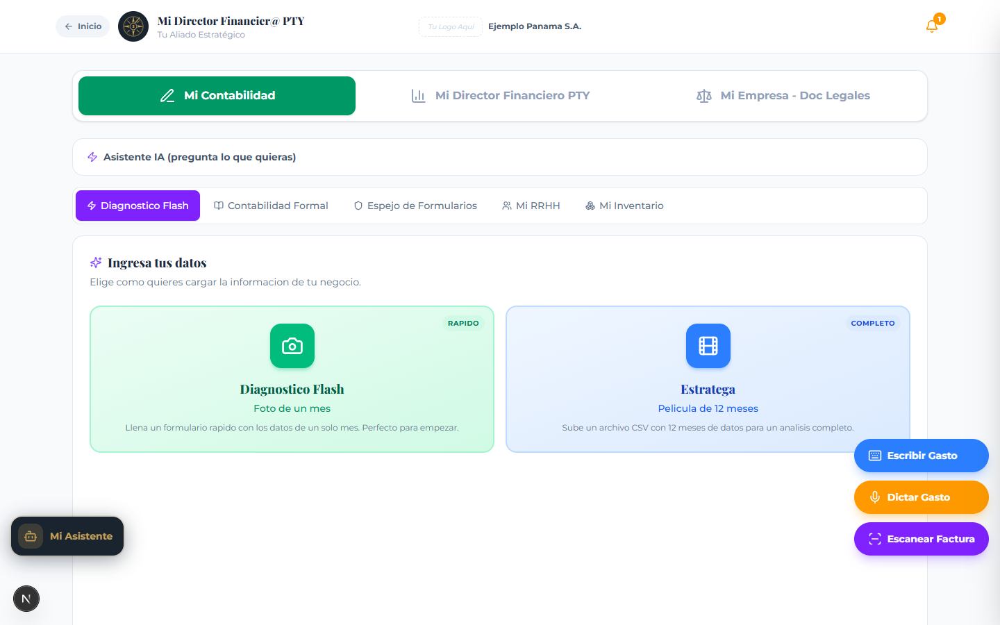
Figura 4. Espejo de Formularios DGI — Pre-llenado automatico de formularios fiscales oficiales con mapeo de casillas e-Tax 2.0.
El Espejo DGI pre-llena los formularios oficiales de la Direccion General de Ingresos de Panama con sus datos financieros. No realiza la declaracion automaticamente; usted transcribe los valores a e-Tax 2.0.
| Formulario | Nombre | Frecuencia |
|---|---|---|
| F2 V10 | Declaracion Jurada S.E.P. (Sociedad de Emprendimiento) | Anual |
| Form 03 | Declaracion Jurada de Renta | Anual |
| Form 430 | Declaracion Jurada del ITBMS | Trimestral/Mensual |
| Form 20 | Declaracion de Pagos a Terceros | Anual |
| Planilla CSS | Planilla Obrero-Patronal de la CSS | Mensual |
Cada formulario muestra los numeros de casilla exactos como aparecen en e-Tax 2.0, con explicaciones de cada campo y validaciones automaticas.
La sub-pestana "Calendario DGI" muestra todas las fechas limite del ano fiscal con semaforo de prioridad (rojo = urgente, amarillo = proximo, verde = en orden).
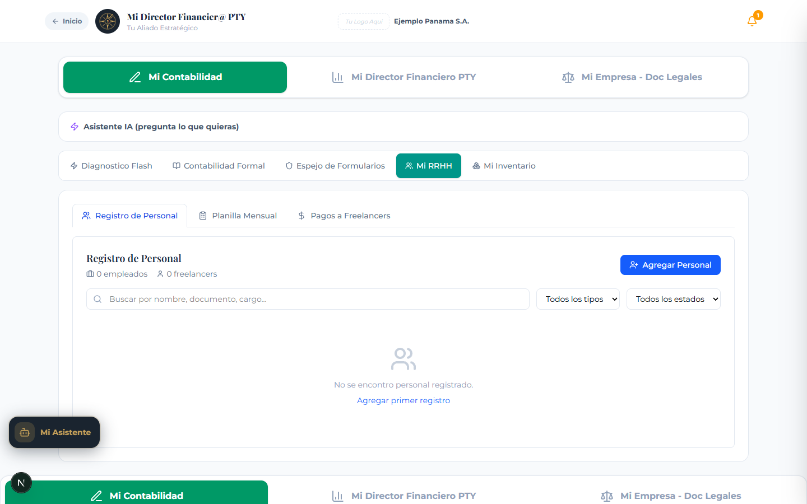
Figura 5. Mi RRHH — Gestion integral de recursos humanos con registro de personal, planilla mensual y pagos a freelancers.
Modulo completo de Recursos Humanos que sirve como fuente unica de datos de personal para todos los formularios fiscales.
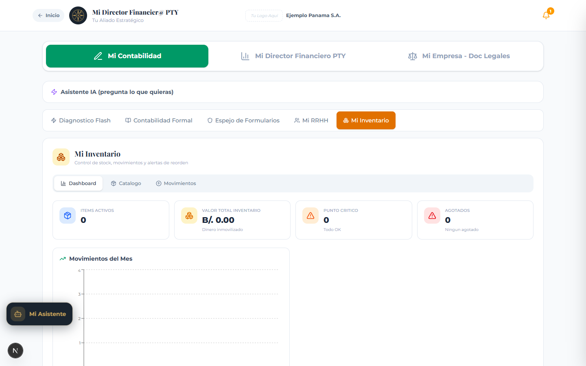
Figura 6. Mi Inventario — Dashboard con metricas, alertas de reorden, graficos de valor y tabla de movimientos.
Modulo de gestion de inventario con tres sub-pestanas internas:
Vista resumen con cuatro tarjetas de metricas:
Incluye una tabla de alertas de reorden con boton "Comprar" para registro rapido, un grafico de barras con los 10 items de mayor valor, y un grafico de movimientos por mes.
CRUD completo de productos con los siguientes campos:
| Campo | Descripcion |
|---|---|
| SKU | Codigo unico generado automaticamente segun categoria (MP-001, EMP-001, PT-001, etc.). |
| Nombre | Nombre del producto o material. |
| Categoria | Materia Prima, Empaque, Producto Terminado, Insumo, Repuesto u Otro. Se pueden agregar categorias personalizadas. |
| Cantidad actual | Stock actual en la unidad de medida seleccionada. |
| Unidad de medida | Unidades, Kilos, Gramos, Libras, Litros, Mililitros, Metros, Pies, Galones, Cajas, Paquetes. |
| Costo unitario | Costo de adquisicion por unidad (se actualiza con costo promedio ponderado). |
| Precio de venta | Precio al que se vende al cliente. El sistema calcula el margen automaticamente. |
| Punto de Reorden (ROP) | Nivel minimo de stock que dispara alerta de compra. Puede ser manual o calculado automaticamente con la formula: (Lead Time x Consumo Diario) + Safety Stock. |
| Proveedor principal | Nombre del proveedor habitual. |
| Estado | Activo o Descontinuado. |
El catalogo ofrece dos vistas (tabla y tarjetas), busqueda por SKU/nombre/proveedor, filtros por categoria y estado, y exportacion a CSV.
Registro inmutable de todos los movimientos de stock. Hay 9 tipos:
| Tipo | Efecto | Ejemplo |
|---|---|---|
| Entrada - Compra | +Stock | Recepcion de mercancia del proveedor |
| Entrada - Produccion | +Stock | Producto terminado ingresa al inventario |
| Entrada - Devolucion Cliente | +Stock | Cliente devuelve producto |
| Entrada - Ajuste Positivo | +Stock | Correccion por conteo fisico (sobrante) |
| Salida - Venta | -Stock | Producto vendido al cliente |
| Salida - Consumo/Produccion | -Stock | Materia prima usada en produccion |
| Salida - Merma/Perdida | -Stock | Producto danado, vencido o robado |
| Salida - Devolucion Proveedor | -Stock | Devolucion de mercancia defectuosa |
| Salida - Ajuste Negativo | -Stock | Correccion por conteo fisico (faltante) |
Este modulo presenta 13 herramientas de analisis financiero organizadas en una grilla de tarjetas. Al hacer clic en cualquier tarjeta, se abre la vista detallada de esa herramienta.
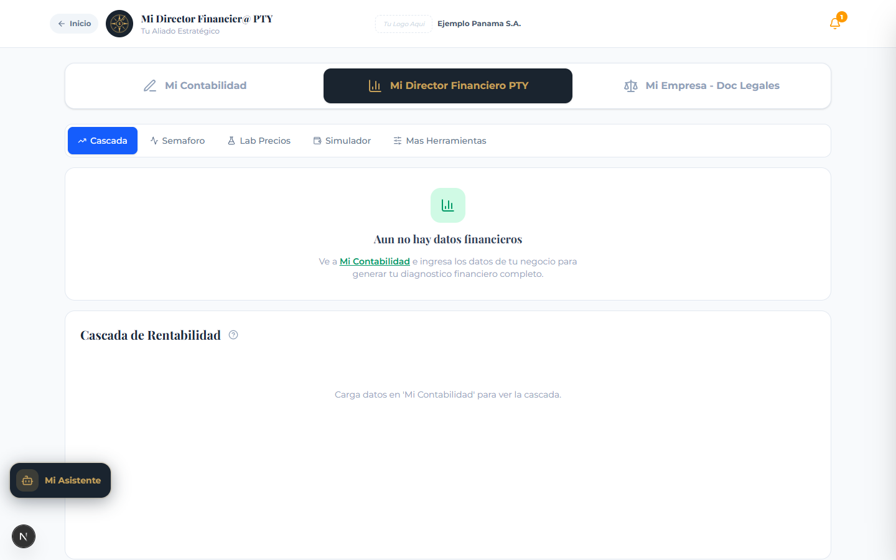
Figura 7. Cascada de Rentabilidad — Desglose visual del estado de resultados desde ingresos hasta utilidad neta.
La herramienta central del modulo. Muestra el camino del dinero desde las ventas hasta la utilidad neta en formato de cascada (waterfall chart):
Debajo del grafico se muestran tres indicadores clave:
Tambien se presenta un resumen del Balance General con activos, pasivos y patrimonio neto.

Figura 8. Semaforo de Eficiencia — KPIs financieros con indicadores de color (verde/amarillo/rojo).
Presenta los ratios financieros mas importantes con indicadores de color tipo semaforo (verde = saludable, amarillo = precaucion, rojo = peligro). Los ratios incluyen margenes de rentabilidad, eficiencia operativa y cobertura de deuda.
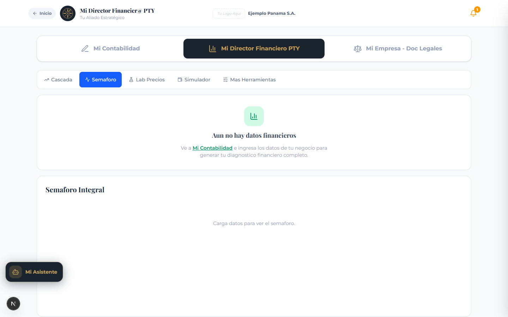
Figura 9. Indicador de Liquidez (Oxigeno) — Prueba Acida, CCC, dinero atrapado y cobertura bancaria.
Analiza la salud del flujo de caja con las siguientes metricas:
| Metrica | Que mide |
|---|---|
| Prueba Acida | Capacidad de pagar deudas a corto plazo sin vender inventario. Meta: mayor a 1.0x. |
| Dias en la Calle | Cuanto tardan los clientes en pagar. Meta: menos de 15 dias. |
| Dias de Inventario | Tiempo que la mercancia esta almacenada sin venderse. |
| Dias Proveedor | Cuanto tarda en pagar a proveedores. |
| Ciclo de Caja (CCC) | Dias totales que tarda el dinero en regresar. Meta: menos de 30 dias. |
| Dinero Atrapado | Capital inmovilizado en cuentas por cobrar e inventario. |
| Cobertura Bancaria | Veces que el EBITDA cubre los intereses de deuda. Meta: mayor a 1.5x. |

Figura 10. Punto de Equilibrio — Calculo del break-even con zona de perdida (rojo) y zona de ganancia (verde).
Calcula las ventas minimas necesarias para cubrir todos los costos (fijos y variables). Muestra un grafico con la zona de perdida (rojo) y la zona de ganancia (verde), junto con el margen de seguridad actual.
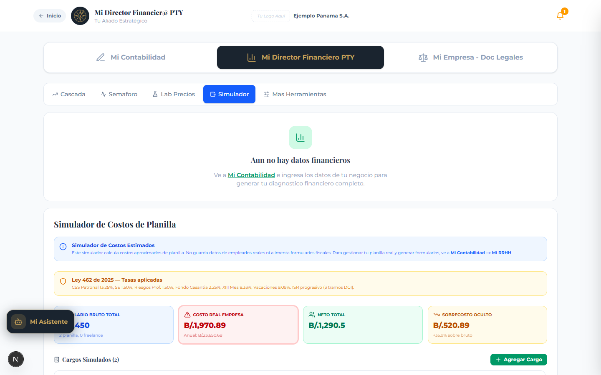
Figura 11. Simulador Estrategico — Modelado de escenarios what-if con sliders de precio, costo y volumen.
Permite modelar escenarios hipoteticos moviendo tres palancas:
El sistema calcula en tiempo real el impacto en el EBITDA y el margen, comparando el escenario original contra el simulado.
Incluye el Escudo Contra el Miedo: si sube precios X%, puede perder hasta Y% de clientes y aun ganar lo mismo. Util para vencer el temor a subir precios.
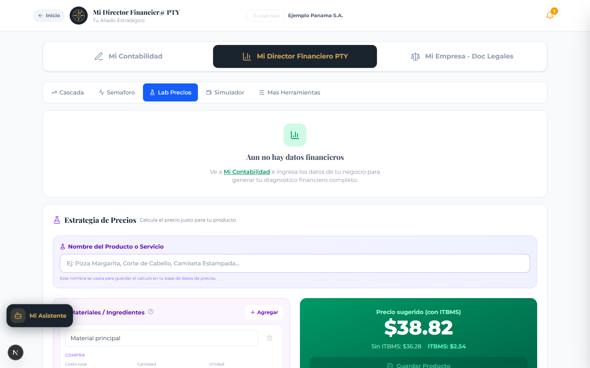
Figura 12. Laboratorio de Precios — Motor de costeo unitario con desglose de ingredientes, mano de obra y ITBMS.
Herramienta de costeo unitario que calcula el precio optimo de venta para cada producto o servicio.
Los productos calculados pueden guardarse en un inventario de precios para referencia futura y comparacion historica.
Estima cuanto vale su negocio si lo vendiera hoy, usando el metodo de multiplos de EBITDA:
Formula: Valor = EBITDA Anual x Multiplo de la Industria
Multiplos tipicos: Restaurantes 2-3x, Servicios 3-5x, Tecnologia 5-10x. Si es dueno del local, se separa el valor operativo (OpCo) del valor del inmueble (PropCo).

Figura 13. Calculadora de Nomina — Desglose de deducciones ISR, CSS, cargas patronales y factor 1.36×.
Calcula el costo real de cada empleado bajo la legislacion laboral panamena (Ley 462 de 2025). Muestra el desglose completo:
| Concepto | Tasa | Paga |
|---|---|---|
| CSS Patronal | 13.25% | Empresa |
| Seguro Educativo Patronal | 1.50% | Empresa |
| Riesgos Profesionales | 1.50% | Empresa |
| Provision XIII Mes | 8.33% | Empresa |
| Provision Vacaciones | 9.09% | Empresa |
| Fondo de Cesantia | 2.25% | Empresa |
| Prima de Antiguedad | Variable | Empresa |
| CSS Empleado | 9.75% | Empleado |
| Seguro Educativo Empleado | 1.25% | Empleado |
| ISR (Tabla DGI) | 0-25% | Empleado |
Resultado clave: el Factor de Costo Real es 1.36x. Por cada dolar de salario, la empresa paga en realidad $1.36 cuando se incluyen todas las cargas sociales y provisiones.
Tendencias: Muestra graficos de linea multi-periodo con promedios moviles y tasas de crecimiento. Incluye proyecciones basadas en datos historicos.
Comparativo: Compara dos periodos lado a lado (ej: Enero 2026 vs Febrero 2026) mostrando las variaciones absolutas y porcentuales de cada metrica.
Permite definir metas presupuestarias por periodo y compararlas contra los resultados reales. Muestra varianzas favorables (verde) y desfavorables (rojo) con un puntaje general de cumplimiento.
Este modulo agrupa todas las herramientas de cumplimiento legal y formalizacion empresarial.
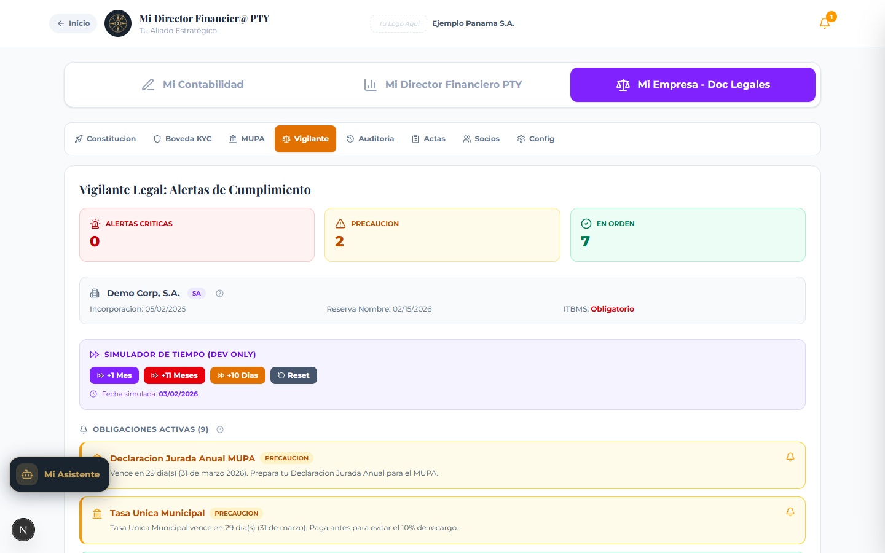
Figura 14. Fabrica de Empresa — Tracker de 6 pasos para la formalizacion de una S.E.P. en Panama.
Asistente paso a paso para la constitucion de una Sociedad de Emprendimiento (S.E.P.) bajo la Ley 186 de 2023 de Panama. Guia al usuario a traves de los requisitos, documentos necesarios y el proceso de inscripcion en el Registro Publico.
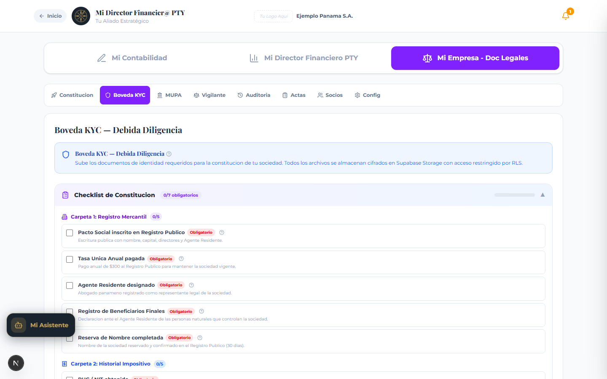
Figura 15. Boveda Legal — Repositorio seguro de documentos con categorizacion y estado de seguimiento.
Almacen seguro de documentos legales permanentes. Permite cargar y organizar por categoria los documentos de la empresa, socios y beneficiarios finales, cumpliendo con la Ley 23 de 2015 sobre prevencion de lavado de dinero.
Categorias de documentos: acta constitutiva, identificaciones, certificados, permisos, contratos, estados financieros, entre otros.
Panel de inteligencia sobre obligaciones municipales. Muestra alertas sobre renovacion del Aviso de Operaciones, multas municipales pendientes, y recargos por mora.

Figura 16. Vigilante Legal — Monitor de 18 obligaciones regulatorias con semaforo de cumplimiento.
Dashboard centralizado de cumplimiento legal que monitorea todas las obligaciones de la empresa y genera alertas proactivas cuando se acercan fechas limite.
Herramienta de preparacion para auditorias fiscales. Incluye:
Libro de Actas: Registro digital de reuniones de junta directiva y resoluciones corporativas.
Socios: Gestion de la estructura de propiedad, datos de socios y ejecutivos de la empresa.
Configuracion: Parametros fiscales y de configuracion general de la empresa.
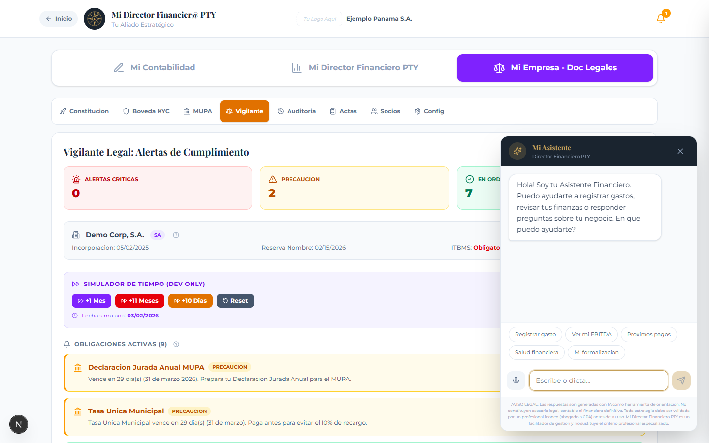
Figura 17. Mi Asistente — Chatbot conversacional con GPT-4o que actua como Director Financiero virtual.
Mi Asistente es un chatbot conversacional impulsado por GPT-4o (OpenAI) que esta disponible en toda la aplicacion. Puede responder preguntas financieras, legales y contables en lenguaje natural.
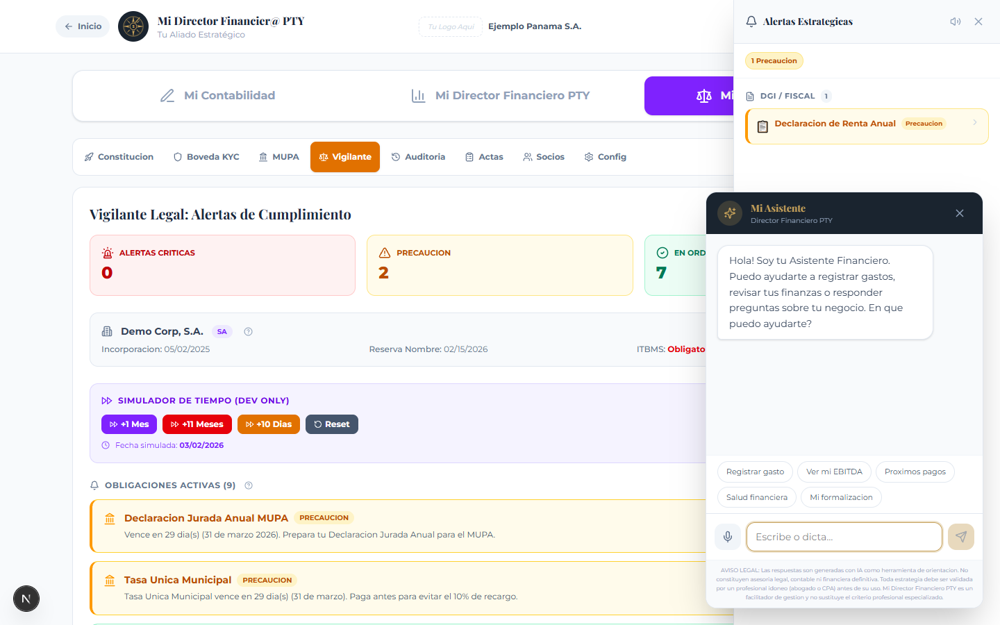
Figura 18. Panel de Alertas — Sidebar con alertas organizadas por categoria, nivel de prioridad y acciones recomendadas.
La aplicacion cuenta con un motor de alertas centralizado que genera notificaciones proactivas basadas en los datos del negocio. Las alertas se muestran en un panel lateral (sidebar) accesible desde el icono de campana en la esquina superior derecha.
| Categoria | Icono | Ejemplos |
|---|---|---|
| DGI / Fiscal | Documento | ITBMS obligatorio, tope Ley 186, renta anual pendiente |
| Capital Humano | Personas | Sobrecosto laboral, feriado proximo, cuota CSS pendiente |
| Liquidez | Gotas | Asfixia de liquidez, caja atrapada, deuda insostenible |
| Rentabilidad | Tendencia | Perdida neta, EBITDA negativo, alquiler excesivo |
| Legal | Documento | Aviso de operaciones, tasa unica, agente residente |
| Inventario | Caja | Producto agotado, punto de reorden, items sin rotacion |
| Nivel | Color | Significado |
|---|---|---|
| Critico | Rojo | Requiere accion inmediata. Riesgo para la operacion. |
| Alerta | Naranja | Situacion que necesita atencion pronta. |
| Precaucion | Amarillo | Indicador en zona de riesgo. Monitorear. |
| OK | Verde | Todo en orden. Indicadores saludables. |
Las alertas se actualizan automaticamente cada vez que se ingresan o modifican datos financieros. Si hay alertas criticas (rojas), el icono de campana muestra una animacion de rebote para llamar la atencion.
El sistema tambien produce sonidos de alerta configurables (activar/desactivar desde el panel de alertas) utilizando Web Audio API nativo del navegador.
La aplicacion incluye un glosario inteligente con mas de 100 terminos financieros, contables y legales explicados en lenguaje sencillo para emprendedores panamenos. A continuacion se presentan los terminos principales:
| Termino | Definicion |
|---|---|
| COGS | Cost of Goods Sold. Todo lo que gastas directamente para producir o comprar lo que vendes. |
| Utilidad Bruta | Lo que queda despues de restar COGS a los ingresos. Tu primera linea de ganancia. |
| OPEX | Operating Expenses. Gastos fijos para mantener el negocio funcionando (alquiler, salarios, etc.). |
| EBITDA | Earnings Before Interest, Taxes, Depreciation and Amortization. Tu ganancia operativa pura. |
| EBIT | EBITDA menos depreciacion. Ganancia operativa real considerando desgaste de activos. |
| EBT | EBIT menos intereses financieros. Lo que ganas antes de impuestos. |
| Utilidad Neta | La ganancia final despues de todo: costos, gastos, depreciacion, intereses e impuestos. |
| Prueba Acida | Mide tu capacidad de pagar deudas a corto plazo sin contar inventario. Meta: mayor a 1.0x. |
| CCC | Cash Conversion Cycle. Dias que tarda tu dinero en hacer el viaje completo de pago a cobro. |
| ITBMS | Impuesto de Transferencia de Bienes y Servicios (7%). Obligatorio si ventas superan $36,000/ano. |
| CSS Patronal | Cuota que la empresa paga a la Caja de Seguro Social (13.25% del salario bruto). |
| XIII Mes | Bonificacion obligatoria pagada en 3 partidas: abril, agosto y diciembre (8.33% mensual). |
| Factor 1.36x | Factor de costo real patronal. Por cada $1 de salario, la empresa paga $1.36 en total. |
| Ley 186 | Ley de Sociedades de Emprendimiento. Exoneracion fiscal por 24 meses (tope $75,000). |
| ROP | Reorder Point. Nivel minimo de stock para disparar alerta de compra. |
| SKU | Stock Keeping Unit. Codigo unico de identificacion de cada producto en inventario. |
P: Donde se guardan mis datos?
R: Los datos se almacenan localmente en su navegador (localStorage) y, cuando hay conexion, se sincronizan con la base de datos en la nube (Supabase). Los datos locales persisten entre sesiones del navegador.
P: Que pasa si borro los datos de mi navegador?
R: Si limpia el cache o localStorage de su navegador, los datos locales se perderan. Si tiene conexion al backend, los datos se recuperaran de la nube al volver a iniciar sesion.
P: La aplicacion realiza declaraciones ante la DGI?
R: No. Mi Director Financiero PTY es una herramienta de preparacion fiscal. Los formularios (F2 V10, Form 03, Form 430, etc.) se pre-llenan con sus datos, pero usted debe transcribir los valores manualmente a e-Tax 2.0.
P: Las tasas y porcentajes estan actualizados?
R: Si. Las tasas de CSS patronal (13.25%), ISR, y demas calculos laborales reflejan la Ley 462 de 2025 y la normativa fiscal vigente a marzo 2026.
P: Puedo usar la aplicacion en mi celular?
R: Si. La aplicacion tiene diseno responsivo completo. En celular se muestra una barra de navegacion inferior y las tarjetas se apilan verticalmente para facilitar el uso con una sola mano.
P: El Asistente de IA puede ver mis datos financieros?
R: El Asistente recibe como contexto las alertas activas y el nombre de su empresa, permitiendo respuestas personalizadas. Los datos financieros detallados solo se procesan localmente en el navegador.
P: Como exporto mis datos?
R: Varios modulos ofrecen boton de exportacion CSV (nomina, inventario, catalogo). Los reportes ejecutivos pueden generarse como PDF desde el modulo Mis Finanzas > Reportes Ejecutivos.